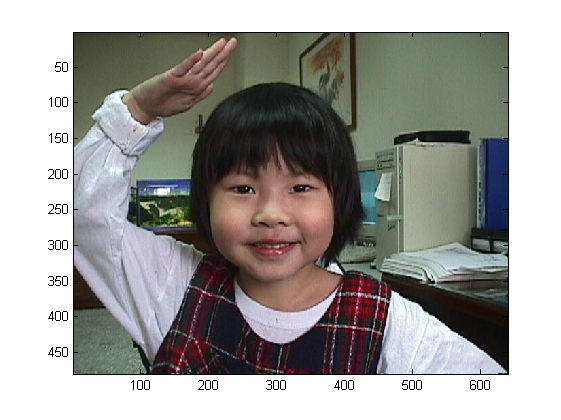
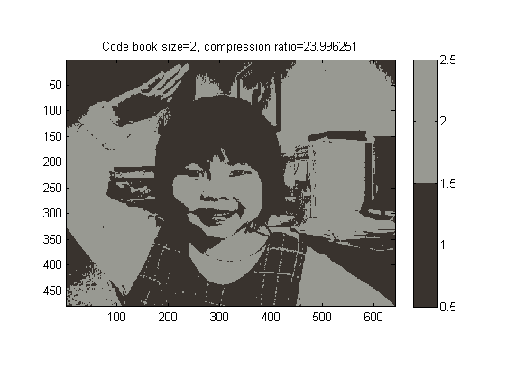
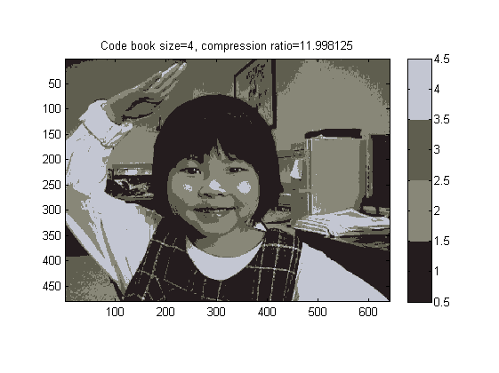
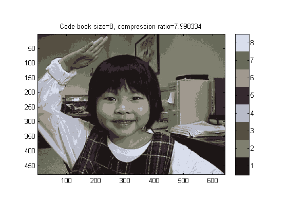
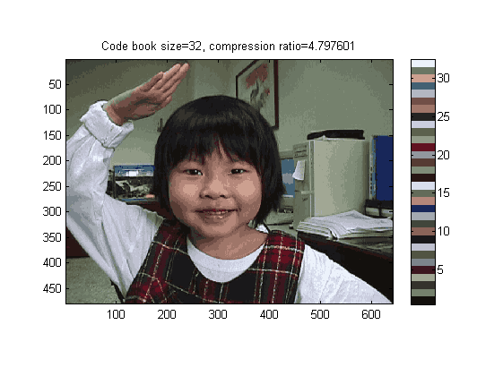
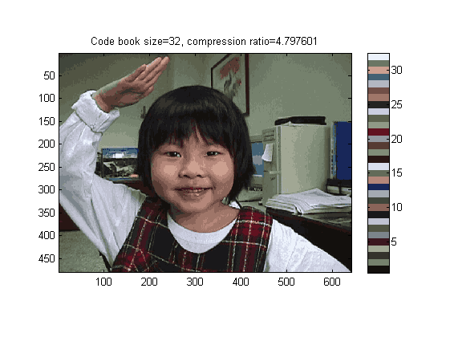

Image Data Compression
In this application example, we shall explore the use of vector quantization for image data compression. A true-color image of size mxn is represented by mxn pixels, each consists of 24 bits of RGB colors. On the other hand, each pixel of an mxn index-color image is represented by an p-bit unsigned integer, which serves as an index into a color map of size 2^p by 3. In order to save storage space, we can use vector quantization to convert a true-color image into an index-color image. The original true-color image requires 24*m*n bits of storage. After the conversion, the index-color image requires p*m*n+8*2^p*3 bits of storage. If we use 256 colors to represent an indexed image of 480*640, the compression ratio is (24*480*640)/(8*480*640+8*256*3) = 2.9925.
Contents
Processing the original image
The following code display the original image before compression:
X = imread([mltRoot, '/dataSet/annie19980405.jpg']);
image(X)
 Since the original image data is stored as an index-color image, we need to collect all the pixels into a data matrix:
[m, n, p]=size(X);
index=(1:m*n:m*n*p)'*ones(1, m*n)+ones(p,1)*(0:m*n-1);
data=double(X(index)); % Each column is a vector of the RGB values of a pixel.
size(data)
ans =
3 307200
Application of vector quantization
We apply different cluster distance functions to obtain the corresponding tree structures, as follows:
centerNum=2^5; tic [center, U, centerHistory] = vecQuantize(data, centerNum); toc
No. of centers = 2, loop count = 11, distortion = 1.22929e+09 No. of centers = 4, loop count = 23, distortion = 3.12334e+08 No. of centers = 8, loop count = 55, distortion = 1.54567e+08 No. of centers = 16, loop count = 127, distortion = 7.46661e+07 No. of centers = 32, loop count = 129, distortion = 3.87941e+07 Elapsed time is 31.009505 seconds.
Display the results
After we have obtained all the centers along the iteration of vector quantization, we can display them one by one:
for i=1:length(centerHistory) center=centerHistory{i}; centerNum=size(center, 2); fprintf('i=%d/%d: centerNum=%d\n', i, length(centerHistory), centerNum); distance=distPairwise(center, data); [minValue, minIndex]=min(distance); X2=reshape(minIndex, m, n); map=center'/255; figure; image(X2); colormap(map); colorbar; axis image; title(sprintf('Code book size=%g, compression ratio=%f', centerNum, 8*3*m*n/(log2(centerNum)*m*n+8*centerNum*3))); end
i=1/5: centerNum=2 i=2/5: centerNum=4 i=3/5: centerNum=8 i=4/5: centerNum=16 i=5/5: centerNum=32  
 
 Copyright 2011-2012 Jyh-Shing Roger Jang.